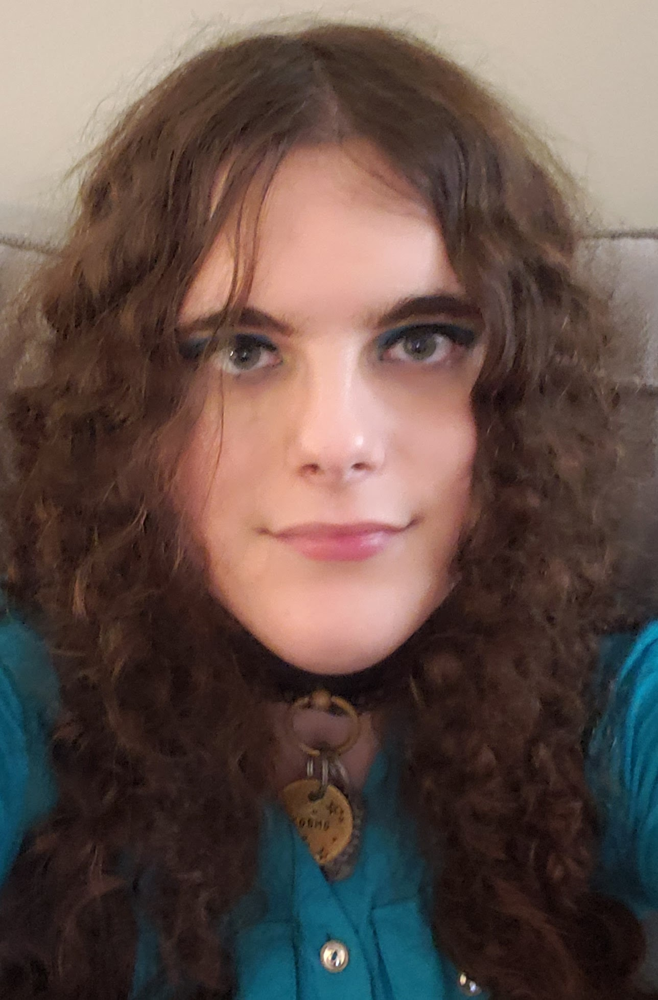

Alexis is a 25 year old transwoman living in Richmond, British Columbia, Canada. Her main passions are writing and photography.
My main passion is writing, particularly fantasy and romance. I have been making up worlds and stories since I was a child, and I don't ever want to stop. I write short stories, but I also want to write novels. I have had a longer story I have beeen working on since I was a teenager, which I have a very tolkien-esque approach to. I have made languages, maps, history, religion, philosophy and so much more for the world of Maeleron, and I hope one day to see the stary of that takes place there on store shelves.
My other big passion is photography, specifically film photography. I am currently eexperimenting with setting up a darkroom space for myself, and intend to expand out to larger formats and colour in the future. I love telling stories of a different kind with my photos. I can say so much interesting things that I cannot possibly do with words in a single photo. The angle, lighting, posing, they all play into how one interprets the ideas I try to express, and I love hearing how other people see my art.